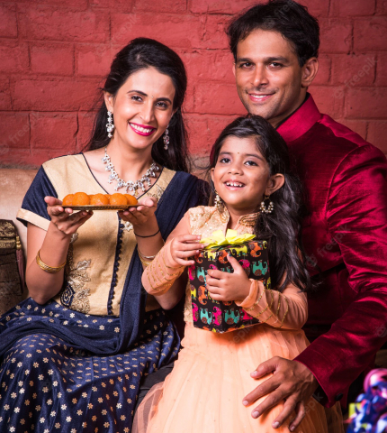
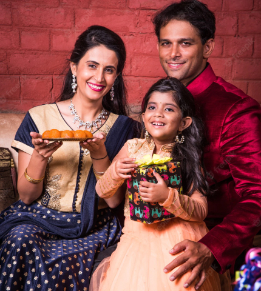

A reunion is the perfect excuse to break out that fit-and-flare dress you’ve been saving for a special occasion. These silhouettes are inherently a little dressier than other styles — and they also look great with everything from strappy metallic sandals to heels to wedge booties.
You can soften the look a little by throwing a cropped denim jacket on top to add a little bit of balance. Another option is a shirt dress, which is perfect if you’re going straight from the office to the reunion. Dress it up with a pair of statement earrings and a glamorous clutch to transform your ensemble to a party-worthy look. Even a maxi dress can be a practical choice for a spring or summer reunion. The right accessories make all the difference to your look. Add a bold necklace and slip on some metallic sandals to bring it all together perfectly.
Traditional dress may be defined as the ensemble of garments, jewelry, and accessories rooted in the past that is worn by an identifiable group of people. Though slight changes over time in color, form, and material are acknowledged, the assemblage seems to be handed down unchanged from the past. Traditional dress or costume is a phrase used widely both by the general public and writers on dress. It conjures up images of rural people dressed in colorful, layered, exotic clothing from an idealized past in some faraway place.